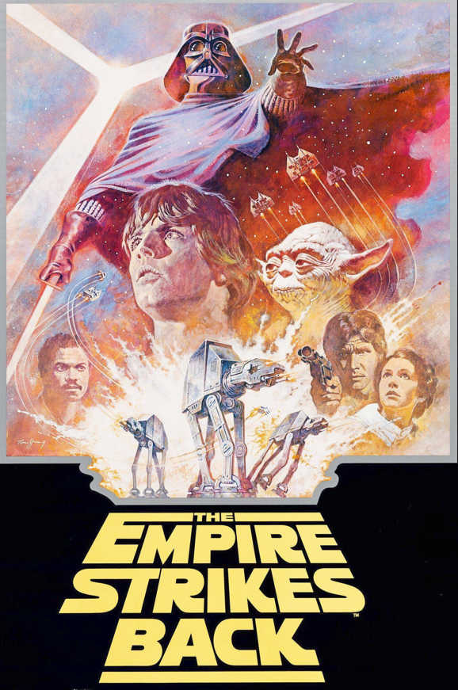
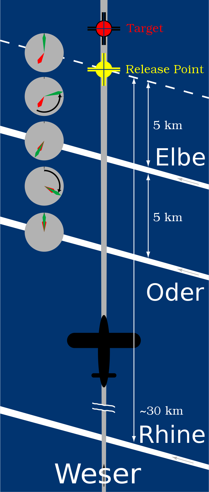
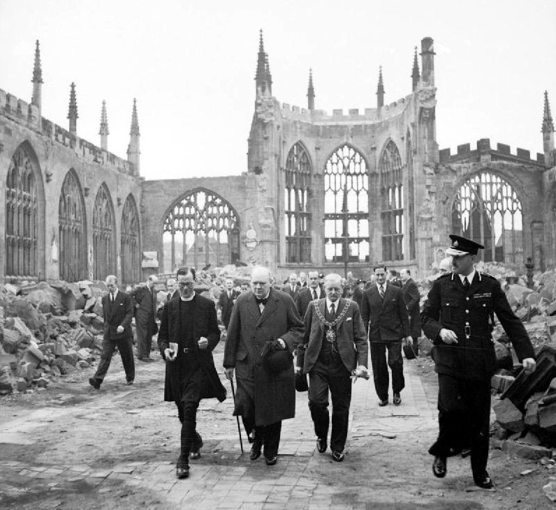
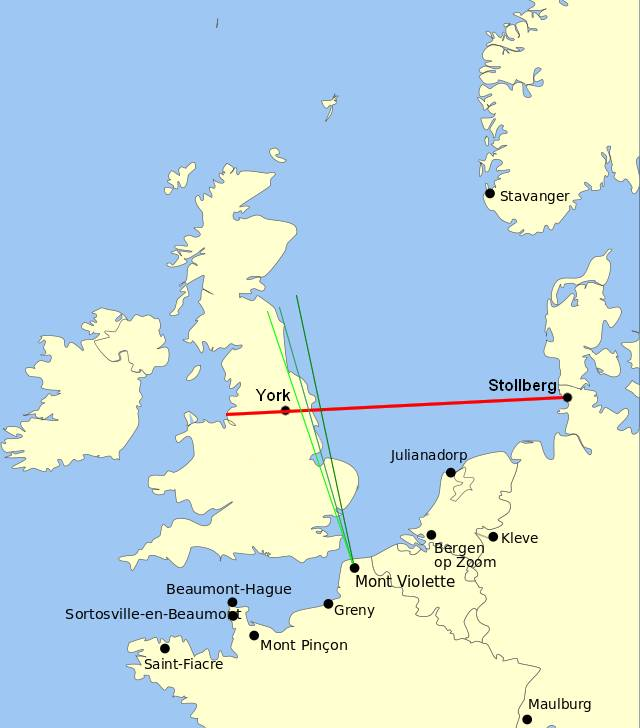
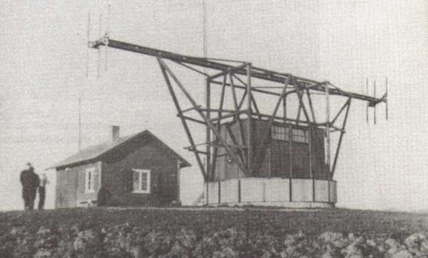
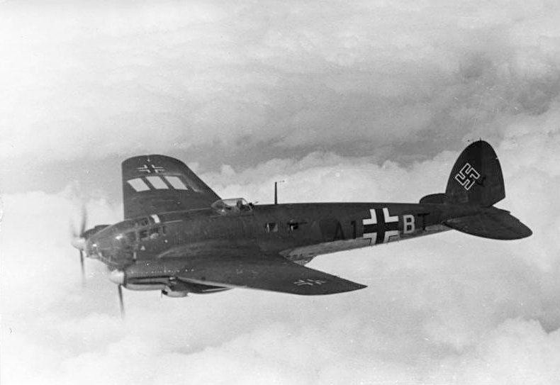
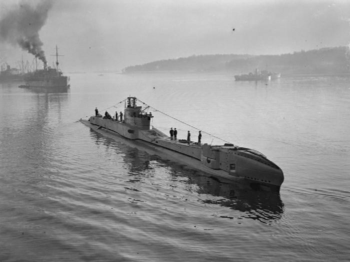
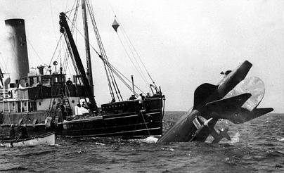
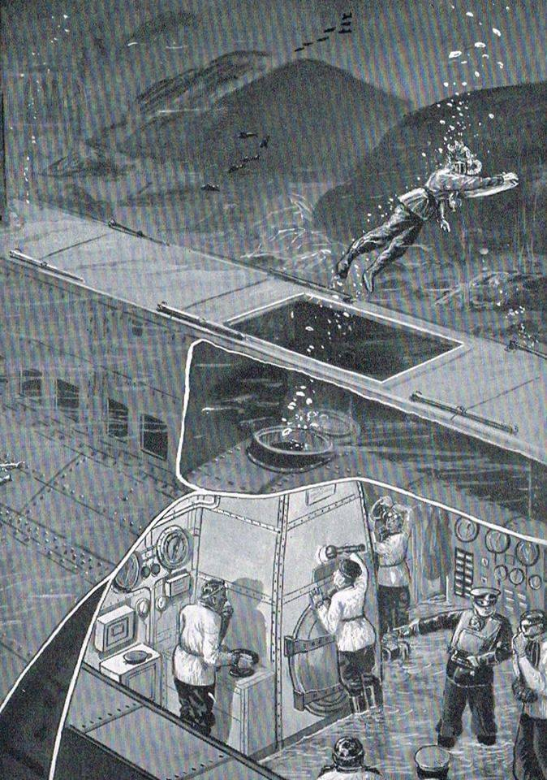
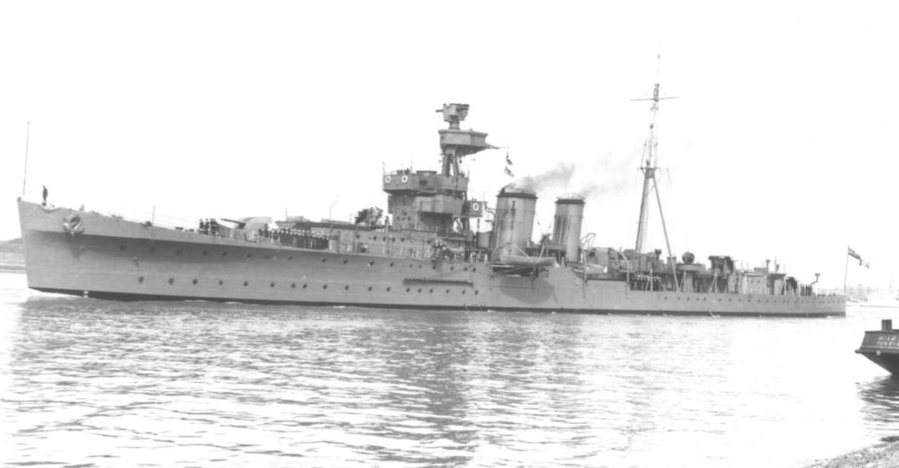

레이더 개발 이야기 (32) - The Reich strikes back
게시: 2023-05-04T06:30:49+09:00
<독일놈들이 당하고만 살지는 않는다>

전파 항법 시스템인 크니커바인(knickebein)이 영국놈들에 의해 재밍되고 있다는 것을 알게된 루프트바페는 전쟁 전부터 준비해오던 비장의 무기 X-Gerät (익스거레트, X-기구, X-apparatus)를 서둘러 실전 배치. 기존 크니커바인에 비해 2배 더 높은 주파수인 60 MHz로 운용되어 훨씬 더 좁고 정밀한 전파 beam을 쏜다는 것도 차이였고, 단지 2개의 빔을 교차시키는 것이 아니라 Weser라는 항법용 전파에 Rhein, Oder, Elbe라는 강 이름을 딴 3개의 평행 전파를 교차시키는 것도 차이였지만, 가장 큰 차이는 저렇게 교차 전파 신호를 받으면 폭탄이 자동으로 투하된다는 것이 가장 큰 차이. 크니커바인이 쉽게 재밍되었던 것은 그 원형인 로렌츠 시스템부터 나타났던 문제. 민간용 계기 착륙 보조 시스템인 로렌츠는 당연히 재밍을 받을 이유가 없었음. 그러나 로렌츠의 도움을 받아 계기 착륙을 했던 조종사는 헤드폰을 통해 들려오는 뚜~뚜~ 신호에 초집중을 해야 했는데, 착륙하려는 조종사는 당연히 관제탑 등과 음성 통신을 해야 하므로 그 뚜~뚜~ 소리에 집중하는 것이 어려웠음. 그로 인해 로렌츠 시스템을 만든 독일 회사에서는 전파 신호를 소리 말고 계기판에 표시하는 방법을 이미 전쟁 전부터 고안해놓고 있었음. 눈으로 보나 귀로 들으나 그게 그거 아닌가 싶을 수도 있지만, 이건 조종사의 음성통신 부담을 줄여준다는 것외에도 큰 의미를 가짐. 바로 자동화. 시각화 가능하다는 것은 자동 switch-on 신호를 줄 수도 있다는 것. 익스거레트의 작동 방식은 대충 이러함. 베저 빔을 따라 가는 폭격기가 라인 빔을 교차하면 조종사에게 목표물이 대충 30km 남았다는 경고 신호를 줌. 그러다 10km 지점에서 매우 정밀한 오데르 빔이 교차되는데, 이러면 두 개의 초침이 자동으로 회전하기 시작. 그러다 목표물에서 5km 지점에서는 역시 매우 정밀한 엘베 빔이 교차되는데, 이 전파 신호를 받으면 오데르가 작동시킨 2개의 초침 중 하나는 멈추고 나머지 하나는 역회전을 시작. 그 역회전 하던 초침이 출발점인 0에 도달하면 거기가 바로 폭탄 지점인 것이고, 폭탄은 조종사나 폭격수의 개입 없이 자동으로 투하됨 (사진1).

크니커바인을 그 특유의 뚜~뚜~ 신호를 유사하게 흉내낸 영국 라디오 방송국 전파로 쉽게 재밍이 가능했던 것은 루프트바페 조종사가 진짜 크니커바인 전파 신호와 영국 라디오 방송국 전파 신호를 귀로 듣고 구분하지 못했기 때문. 그러나 조종사는 속일 수 있을지 몰라도, 전자기기를 속이기는 쉽지 않았음. 영국은 익스거레트의 유도를 받은 루프트바페 폭격기들이 기존 크니커바인 재밍에 의해 영향을 받지 않고 정확한 폭격을 개시하자 뭔가 새로운 전파 항법 시스템이 가동된 것을 눈치 챔. 역시 그 신호도 전파 탐지기로 포착했으므로 바뀐 주파수에 따라 비슷한 신호를 라디오 방송국에서 보내기 시작했으나 이번에는 재밍이 안 됨. 이 와중에 벌어진 것이 Battle of Britain에서 가장 크고 상징적인 피해로 기록되는 1940년 11월 코벤트리 시의 완전 파괴, 흔히 Conventry Blitz라고 불리는 사건 (사진2).

영국은 이 위기에 대해 어떻게 대응할 수 있었을까?
<폭격기에 실린 첨단기술은 결국 적에게 넘어간다> 익스거라트에 대해 영국이 속수무책이었던 것은 크니커바인의 재밍에 대해 루프트바페가 속수무책이었던 것과 같은 이유. 영국 애들은 익스거라트 신호에 대해 대충 1초에 1500번 반복되는 것으로 파악했으나 실제로는 1초에 2000번. 그 정도의 차이는 별 것 아니라고 생각했으나 정밀 전자신호를 다루는 익스거라트 수신기는 그 차이를 어렵지 않게 구분했고, 따라서 1500 Hz의 주기로 방출되는 영국의 재밍 신호를 익스거라트는 완전히 무시.

(X-Gerät의 송신기 위치. 주 항법 빔은 과거 크니커바인이 있던 스톨베르크에서 쏘았으나, 베저, 오데르, 엘베의 교차 빔들은 프랑스 연안에서 발사.)
다만 익스거라트에도 문제는 있었음. 워낙 정밀한 고주파 전자기기였으므로, 전쟁 준비가 완벽하지 않은 상태에서 WW2를 시작한 독일에는 충분한 수의 익스거라트 수신기를 만들 고주파 진공관 생산량이 충분치 않았음. 덕분에 모든 폭격기에 익스거라트 수신기를 탑재할 수가 없었으므로, 일부 폭격기 편대에 이 익스거라트 수신기를 탑재한 폭격기를 배치하여 길잡이 역할을 하는 Kampfgruppe 100 (전투집단 100)을 운용. 뒤따르는 폭격기는 가끔씩 조명탄을 투하하여 유도했고, 종국에는 투하된 폭탄으로 발생한 화재가 최종적인 길잡이 역할을 함. (영국도 나중에 이를 본떠 PathFinder 폭격기 편대를 따로 운용했음.)

(X-Gerät의 항법용 전파인 Weser beam 송신 안테나. 크니커바인에 비해 오히려 크기는 줄어들었음.)
이렇게 익스거라트 수신기가 모든 폭격기에 탑재된 것도 아니다보니, 영국은 격추되는 루프트바페 폭격기 잔해를 열심히 뒤졌으나 딱히 실마리를 찾지 못함. 그러다 1940년 11월 6일, 마침내 익스거라트 수신기를 탑재한 하인켈 He 111 (사진3) 폭격기가 연안에 추락. 영국은 바닷물 속에 빠진 이 폭격기도 혹시나 싶은 마음에 건져 뒤져보았는데, 빙고! 여기서 익스거라트 수신기를 찾아내어 분석한 결과, 익스거라트는 자동 폭탄 투하까지 수행한다는 것과 함께, 그 정확한 신호 패턴을 파악할 수 있게 됨.

부랴부랴 재밍 신호를 수정했으나, 거기에는 시간이 걸렸으므로 11월 14일 코벤트리 폭격은 막지 못함. 대신 11월 19일 버밍엄에 대한 폭격은 성공적으로 저지. 나중에는 가짜 엘베 빔을 쏘아 목표물 훨씬 앞쪽에서 폭탄이 자동으로 다 쏟아지게 만들기도 했음. 그러나 여기서 승부가 끝난 것은 물론 아님. 루프트바페는 이미 Y-Gerät를 준비 중이었음.
<레이더 이야기는 아니지만... HMS Thetis의 비극>
HMS Thetis (1500톤, 15노트)는 1938년 진수된 T-class 잠수함 (사진1은 사고 이후 건져내어 HMS Thunderbolt로 개장한 사진).

1939년 6월, 연안의 얕은 바다에서 첫 잠항에 들어갔는데, 여기서 사고가 발생. 사고는 6기의 어뢰 발사관에 물을 채우는 과정에서, 발사관 중 하나에 알 수 없는 이유로 물이 채워지지 않은 줄 알고 어뢰 담당 장교인 Frederick Woods 중위가 어뢰실의 어뢰 장전문을 열어 본 것. 실제로는 어뢰 발사관의 침수 여부를 확인하는 밸브에 굳은 페인트가 쌓여 막혀 있었을 뿐 어뢰 발사관이 개방되어 있었고, 따라서 앞뒷문이 순간적으로 다 열린 어뢰 발사관을 통해 바닷물이 엄청난 압력으로 들어옴. 일단 어뢰실만 침수되고 우즈 중위를 포함한 수병들은 재빨리 대피.
얕은 바다라서 어뢰 발사관이 있는 이물이 해저면에 닿고도 스크루는 물 위로 들려 있었음 (사진2).

따라서 승조원들이 탈출할 여지는 충분했음. 그러나 해저 10m에서도 수압은 막강한 지라, 한번에 1명씩만 탈출시킬 수 있는 1개의 탈출관(Davis escape apparatus, 사진3)을 통해서만 탈출이 가능.

즉, 어뢰 발사관처럼 안쪽 문을 열고 좁은 탈출관 안에 사람이 들어간 뒤, 안쪽 문을 잠그고 바깥 문에 달린 밸브를 열면 탈출관이 침수됨. 이때 절대 미리 탈출관의 바깥 문을 열려고 하면 안 되고, 탈출관이 완전히 침수된 이후에 바깥 문을 열어야 함. 그러고 난 뒤 바깥 문을 열고 나온 뒤, 다시 바깥 문을 잠근 뒤 해수면까지 헤임쳐서 올라오면 됨. 그러니까 밀폐된 탈출관 안에서 승조원은 완전 침수된 상태로 숨을 멈추고 적어도 수십 초를 참아야 했음.
4명까지는 성공적으로 차례로 탈출했으나, 5번째 사람은 그만 공포에 사로잡혀 완전히 침수되지 않은 상태에서 탈출관 바깥 문을 염. 당연히 엄청난 압력의 바닷물이 쏟아져 들어오며 5번째 사람을 익사시켰고, 바깥 문이 열린 상태에서 탈출자가 죽어버렸으니 바깥 문을 잠글 사람이 없어짐. 따라서 안쪽 문을 열 수도 없으니 탈출관은 쓸 수가 없게 됨.
구조에는 20시간이 넘게 걸렸고, 그 시간 동안 99명의 승조원 및 잠수함 건조에 참여한 민간 조선소 직원들이 이산화탄소 중독으로 사망. 매우 고통스러운 죽음이었을 듯.
탈출한 4명 중 3명이 군인이고 1명은 민간인 조선소 직원이었는데, 군인 중 하나는 어뢰 발사관 사고를 일으킨 장본인 우즈 중위였고 다른 한 명은 함장 Harry Oram 대령이었음. 나머지 1명은 기관실 사병. 왜 함장이 먼저 탈출한 4명 중 하나였는지는 밝혀지지 않았는데, 그로 인한 징계는 받지 않은 듯. 이유는 불과 몇 개월 뒤인 1939년 8월부터 경순양함 HMS Cairo (아래 사진)의 함장직을 수행했기 때문. 다만 오럼 대령은 WW1 이후 계속 잠수함에서만 근무하던 사람인데 이 사고 이후로는 잠수함을 타지 않았음. 그래서인지 HMS Cairo를 불과 5개월 만인 다음 해 1월 좌초시킴. 해군성에서는 이에 대해 오럼 대령의 책임이 있다고 엄중히 문책함. 그러나 또 금방 중순양함 HMS Hawkins를 맡아 2년간 함장으로 복무함. 대신 1945년 종전되자마자 전역함.

HMS Thetis 사고는 당시 유럽에 큰 화제였으며, 히틀러도 이 사고에 대해 조문 편지를 보냄. 특히 사망한 민간 조선소 직원들 중에는 영국 잠수함 기술의 핵심 관련자 여러 명이 타고 있어서 영국 잠수함 기술이 이 사고로 인해 상당 부분 퇴보했다고.